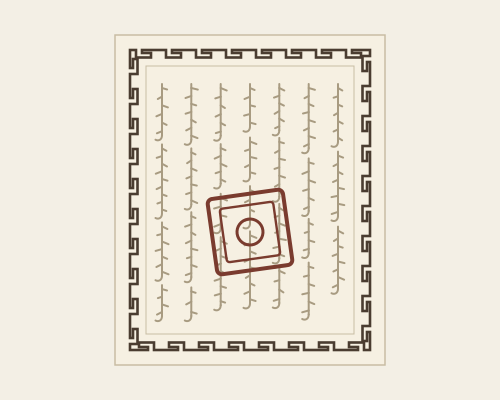

01Brief & spec received
The work starts when somebody writes down what this is for, who it is for, and what counts as done. A spec you can argue with beats a spec you have to guess at.
Most wasted design work solves a problem nobody had. The wireframes at the end of this stage are deliberately rough — they exist to test whether the thinking holds, not to look finished.
Алхам · Steps
-
01
Brief & spec received
The work starts when somebody writes down what this is for, who it is for, and what counts as done. A spec you can argue with beats a spec you have to guess at.
-
02
Brainstorm
Everything plausible goes on the board before anything gets judged. Narrowing too early is how you end up building the first idea instead of the best one.
-
03
Deep research
AI-assisted, using my own master prompt
Competitors, conventions and the people who will actually use it, run through a master prompt I keep tuning. It turns a week of reading into an afternoon.
-
04
Userflows and wireframes
Built with Claude
Every screen and every branch, drawn rough on purpose. If a flow only reads when the visuals are finished, the flow is doing none of the work.